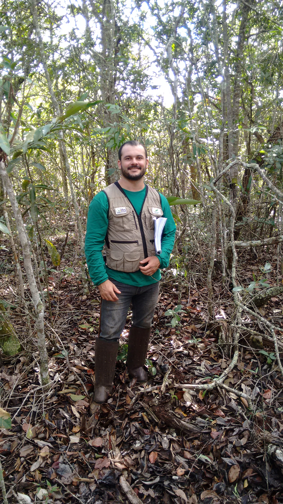

Regularize sua Terra e Proteja seu Patrimônio.
Engenheiro Florestal | Especialista em Licenciamento e Regularização Ambiental
Evite multas ambientais, resolva pendências fundiárias e libere o acesso a créditos agrícolas. Ofereço assessoria técnica de alta precisão para que você possa focar no crescimento do seu negócio, enquanto eu cuido de toda a burocracia e conformidade legal.
Precisão centimétrica com tecnologia RTK.
Experiência real em campo e processos administrativos.
Foco em resultados: agilidade na obtenção de licenças.